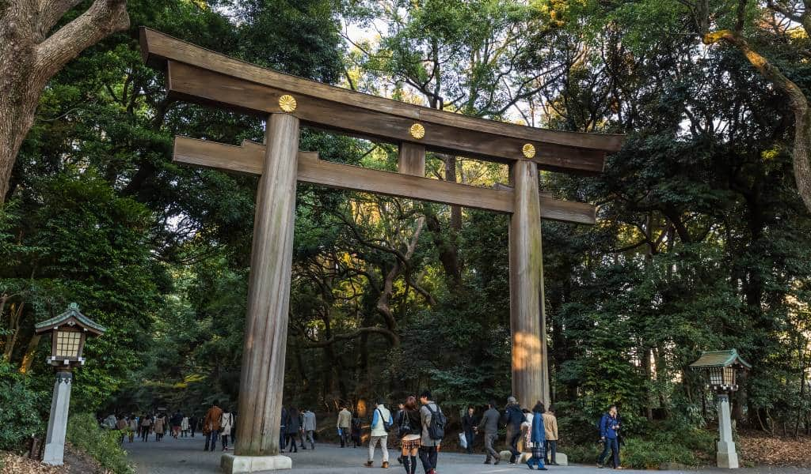

My Dream Travels
My Dream Travels
by @yasminxav


Japão
O Japão é um país localizado no continente asiático e também chamado de “Terra do Sol Nascente”.
É a terceira economia mundial.A população japonesa é uma das maiores do mundo, e sua densidade demográfica
é também uma das mais elevadas.
além de ser uma referência internacional em educação e desenvolvimento científico, sendo um dos países líderes
da Revolução Técnico-Científica-Informacional.
Há dois tipos principais de clima: o Temperado Frio, ao norte, e o Subtropical, na região centro-sul. Em geral,
o Japão possui um forte verão, com bastante umidade, além de um inverno rigoroso na maior parte do país.
Vila das Raposas
Imperial Palace
Meiji Jingu
Islândia
Islândia, é um país nórdico insular europeu situado no oceano Atlântico Norte.Terra do gelo e do fogo, o país traz vários
exemplos de desenvolvimento social e ambiental. Lá também encontramos uma série de curiosidades que nos fazem questionar
se a Islândia realmente faz parte desse mundo.
Apesar de já ter desempenhado um papel secundário - num palco onde os vizinhos nórdicos da Suécia e da Noruega eram os
principais personagens - a Islândia começou a ganhar todos os holofotes, para mostrar ao mundo do turismo tudo o que
perdeu nestes anos.
Enormes cavernas subterrâneas de gelo em expansão, vulcões dos mais imponentes, relaxantes piscinas de banhos termais,
cachoeiras, gêiseres, praias de areia negra, campos de lava fumegante, aurora boreal, sol da meia noite e uma população
inteira com certo grau de parentesco.
Restaurante Perlan
Gunnuhver
Museu Nacional
Estados Unidos
Estados Unidos ou Estados Unidos da América (EUA), como é chamado oficialmente, são um país localizado no continente
americano (subcontinente América do Norte). O país é considerado o mais influente do mundo e exerce forte domínio
político, econômico, militar e cultural.
Os EUA participam de diversas organizações, como o Conselho das Nações Unidas; o Acordo Estados Unidos-México-Canadá
(USMCA), antigo Nafta; a Otan, dentre outros. A nação mantém relações diplomáticas com a maioria dos países em todas
as regiões do mundo.
Os Estados Unidos são também considerados uma nação multicultural. A grande extensão territorial confere ao país uma
elevada biodiversidade e o encontro de diversas etnias, contribuindo para uma cultura riquíssima, repleta de
particularidades em cada região do país.
Estátua da Liberade

Estátua da Liberade
Estátua da Liberade
Peru
Com uma cultura rica e espetacular, o Peru é um país que se orgulha de sua história, de seus costumes, de suas tradições
e de suas civilizações. Não é para menos. O país foi berço de algumas das civilizações mais antigas da América do Sul,
como as culturas pré-incas, tais como a Moche, Huari e a Nazca, que surgiram por volta de 700 a.C. e 100 a.C.
Por conta da enorme importância dessas civilizações na região, o Peru se manteve por centenas de anos como o centro
político e produtivo da América Latina, influenciando muito a cultura de outros povos. Como exemplo encontramos as línguas
quéchua e aimará, de origem indígena, que mesmo nos dias de hoje ainda são faladas no país e em regiões dos Andes.
Machu Picchu
Montanhas Arco-Íris
Oasis de Huacachina
Alemanha
A Alemanha é o país mais populoso (sem contar a Rússia) e rico da Europa, tendo grande relevância nas decisões
regionais e mundiais nos mais variados níveis: política, economia, aspectos sociais, entre outros.
A Alemanha é um dos países mais organizados do planeta, limpo e pontual, responsável e inteligente. E o melhor
é que não faltam animação, belas paisagens, história e cultura. A Oktoberfest de Munique é uma verdadeira ode à
cerveja e à vida, concertos de Bach e Beethoven exemplificam a genialidade humana, enquanto edificações como o
castelo de Neuschwanstein, perto de Füssen, e a Catedral de Colônia mostram um pouco da história dessa nação que
é um dos pilares da União Europeia.
Portão de Brandenburgo
Castelo de Neuschwanstein
Catedral de Colônia